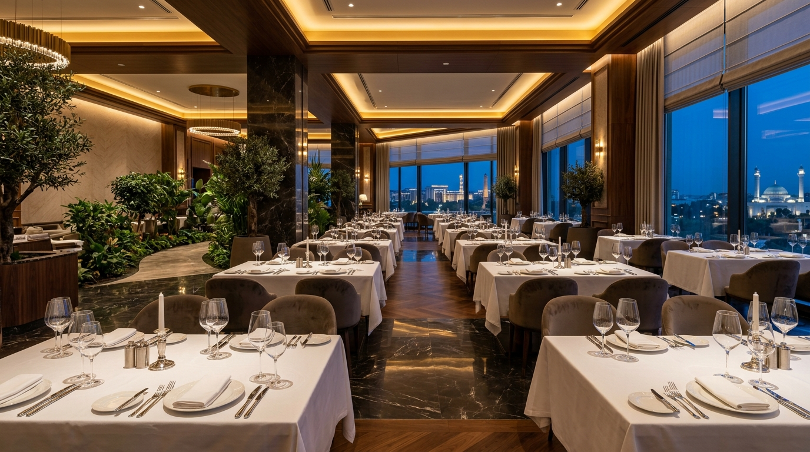
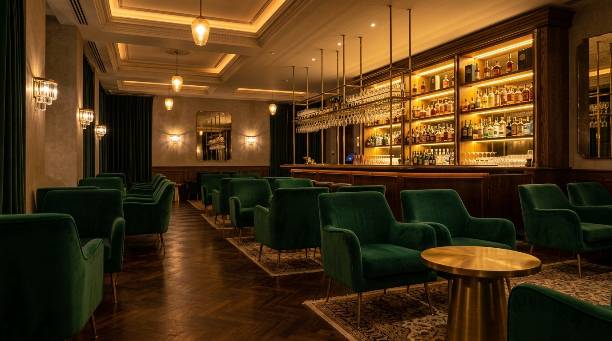

O'rta Yer Dengizi Ruhiyati va Yevropa Mahoratining Sof Ifodasi.
Basilic restoraniga xush kelibsiz — bu yerda mavsumiy noz-ne'matlar, sokin me'moriy hashamat va asrlar osha sayqallangan taomlar Toshkent markazida birlashadi.

Basilic Restoranining To'rtta Ustuni
Saralangan Taomlar
Yil fasllari ne'matlari va mukammal Yevropa texnikasini aks ettiruvchi maxsus taomlar to'plami.
“Buyuk kulinariya ingredientlarni yashirish emas; balki ularning asl tabiatini jasorat bilan ochib berish san'atidir.”
Vazmin Hashamat & Fazo Uyg'unligi
Tabiiy tosh arxitekturasi, maxsus yong'oq daraxti bezaklari va akustik osoyishtalik.

Shaxsiy VIP Zallar va Tadbirlar
Maxsus degustatsiya taomnomasi, mualliflik organik ichimliklari va rasmiy delegatsiyalar, oilaviy bayramlar uchun mo'ljallangan yopiq shinam salonlar.
VIP Zallarni Ko'rish →O'rta Yer Dengizi Ruhiyati va Yevropa Aniqligi Uyg'unligi.
Taom tanovuli mehmondo'stlik, samimiyat va toza ne'matlar san'ati ekanligiga ishonamiz.
Bizning Tariximiz
Basilic Toshkentning qaynoq markazida shoshilmas va sokin maskan sifatida barpo etildi. O'rta yer dengizi sohil villalari, Parij oshxona intizomi va zamonaviy arxitektura vazminligidan ilhomlangan makonimiz nozik did egalari uchun qulay boshpana hisoblanadi.
Maxsus ko'mirli Josper pechlaridan tortib, harorati nazorat qilinadigan organik choy xonalarigacha — har bir detal ingredientlarning tabiiy fazilatlarini eng yuqori darajada ochib berish uchun moslangan.
Stol Band Qilish
Sizni kutib olishdan mamnunmiz. 8 kishidan ortiq kompaniyalar yoki VIP xonalar uchun konsyerjimiz xizmatingizda.
To'g'ridan-To'g'ri Konsyerj Xizmati
Restoran Odobi va Eslatmalar
- · Smart casual yoki rasmiy kiyinish uslubi tavsiya etiladi (sport kiyimlari taqiqlanadi).
- · Stolni ushlab turish tartibi: Bron qilingan vaqtdan so'ng 20 daqiqa kutiladi.
- · Har kuni soat 19:30 dan boshlab sokin jonli akustik va vinil jaz musiqasi.